Siesta Key through our windshield
Good rides.
Great views.
A look at the fleet, the island and the people and places that make every ride feel like Siesta Key.
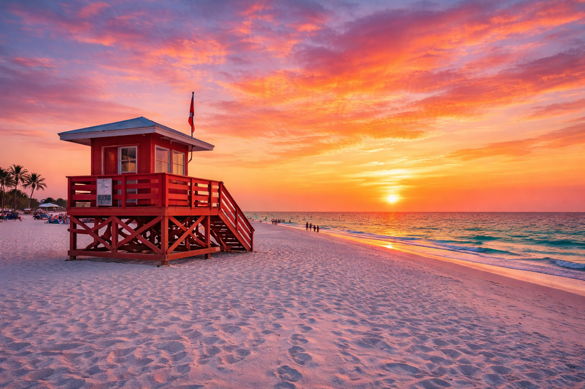
Fresh from the camera roll
Meet the
fleet.
Our van and trolley are ready for Siesta Key, Gulf Gate, airport runs, events and everything in between.
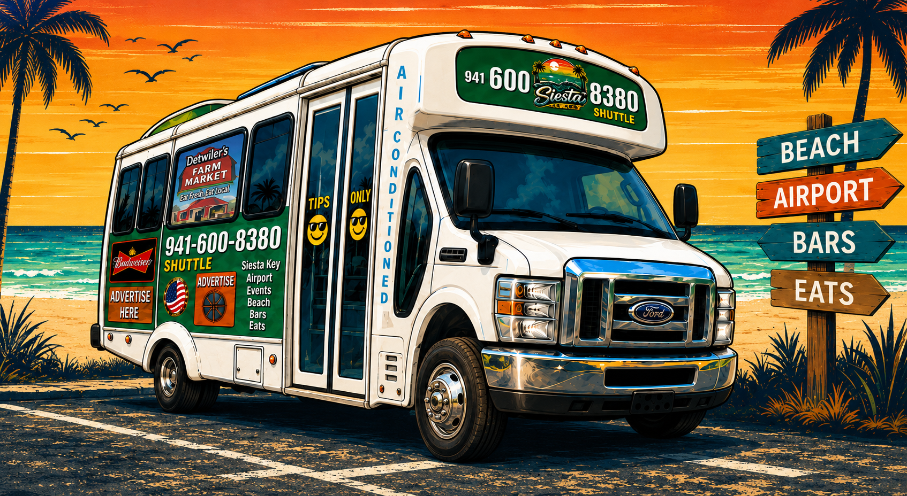
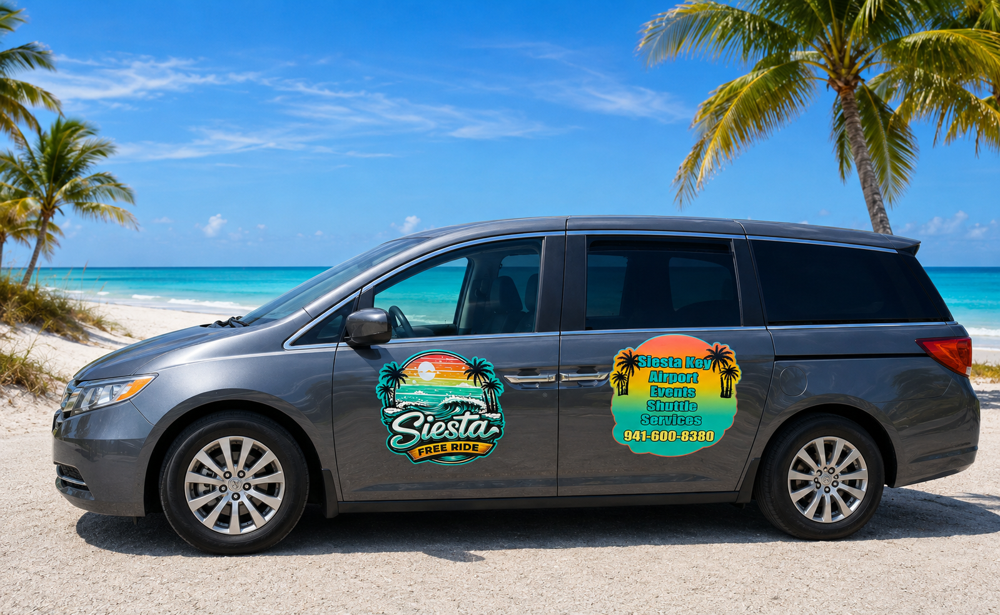
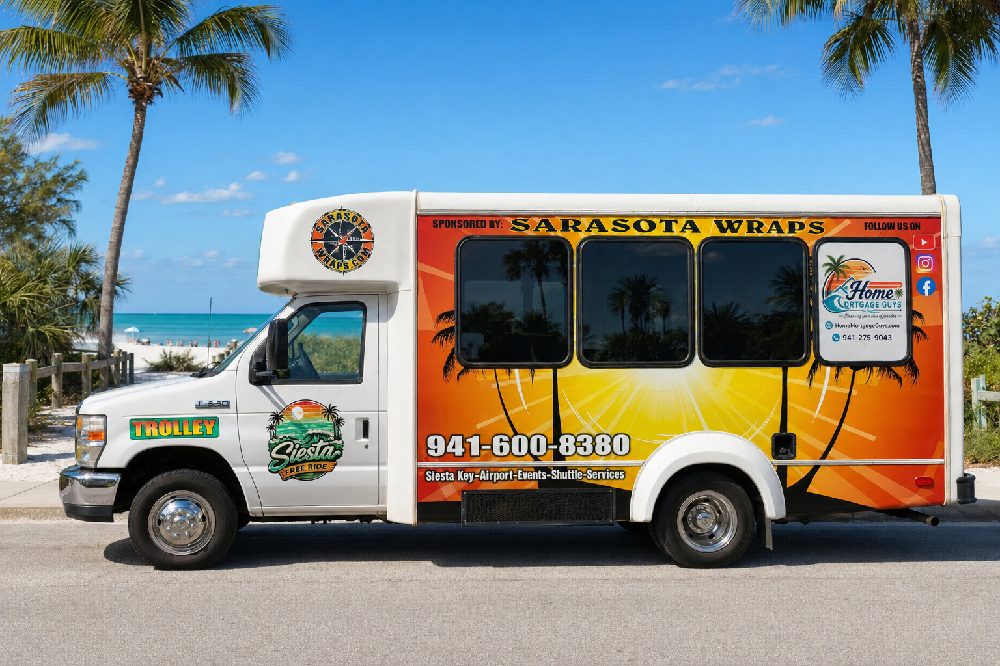
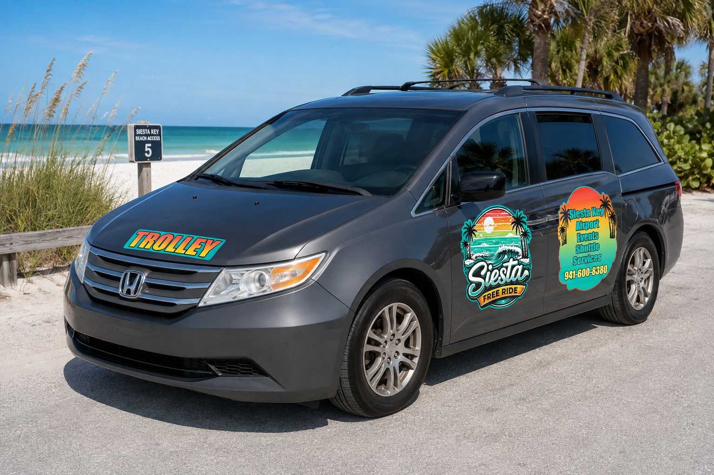
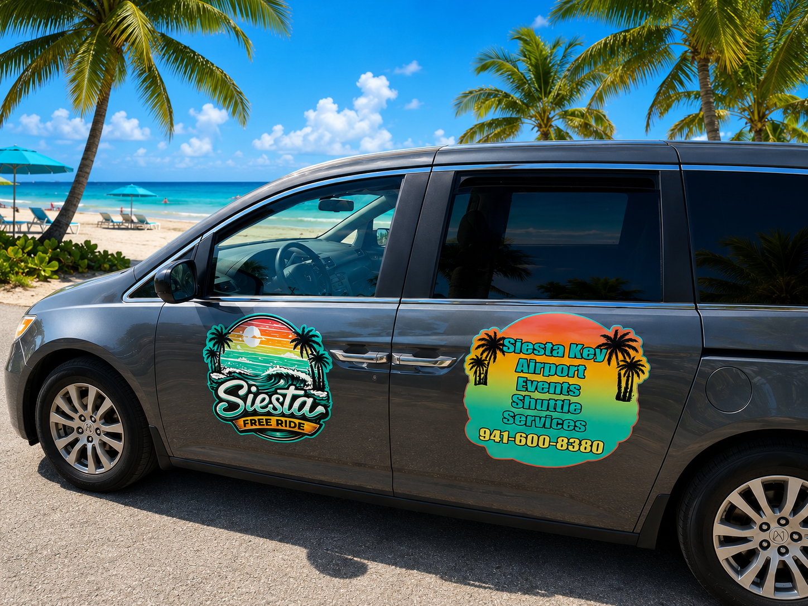
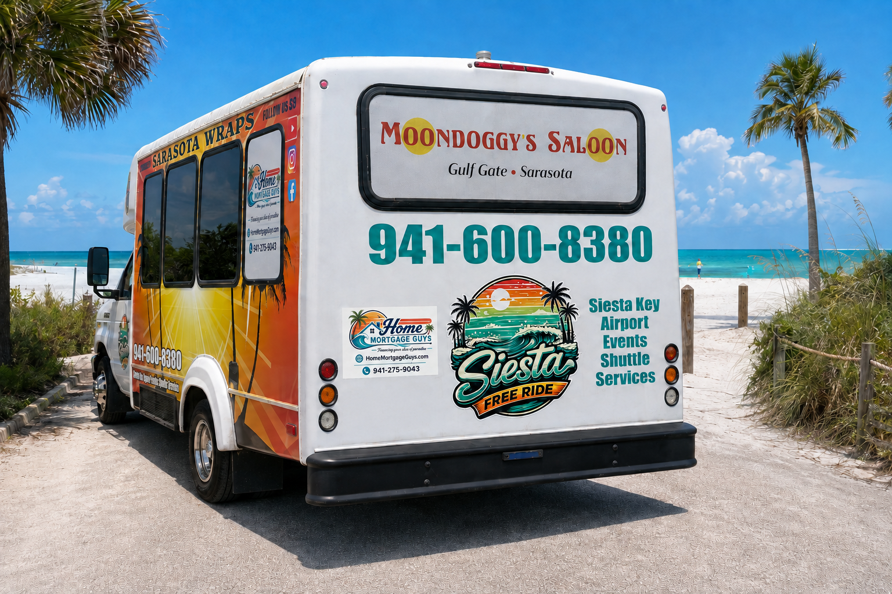
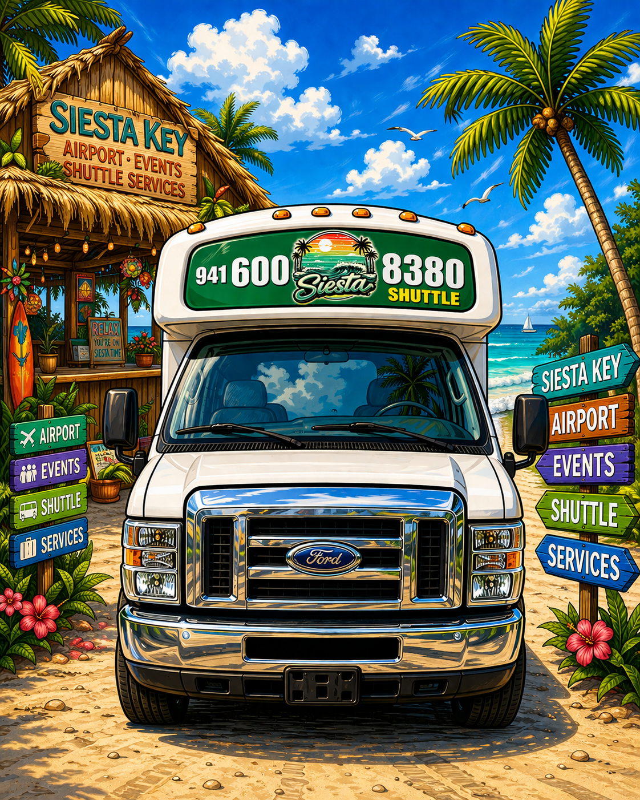
White sand. Gulf blue.
Only on
Siesta Key.
The views are part of the ride—from the wide sweep of the shoreline to the moments that make the beach feel like home.
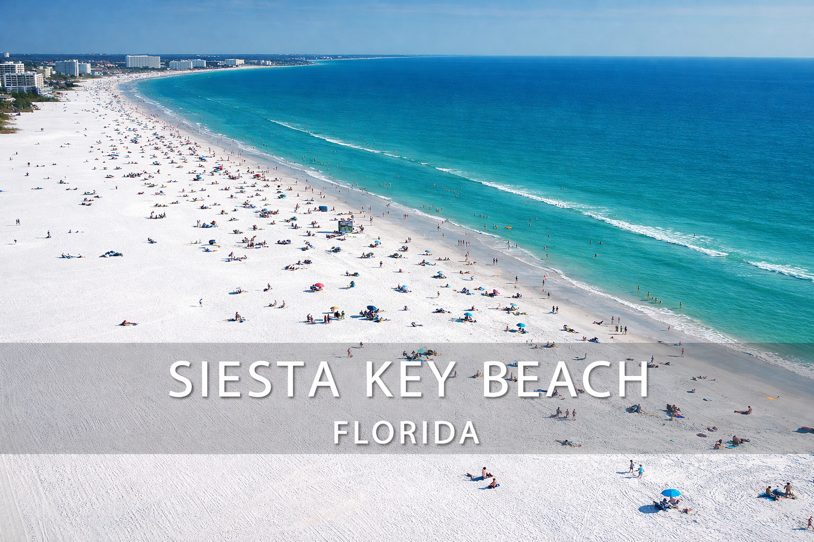
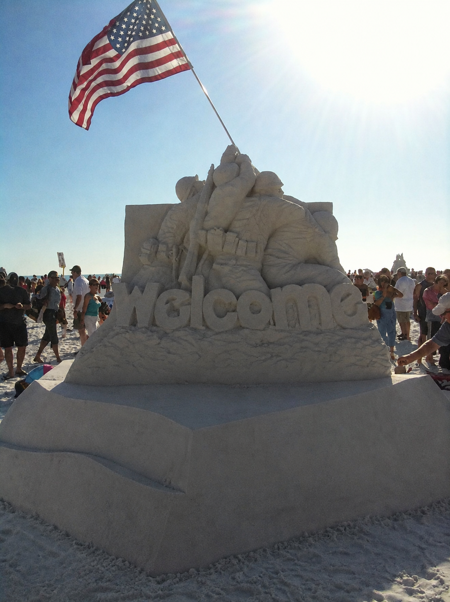
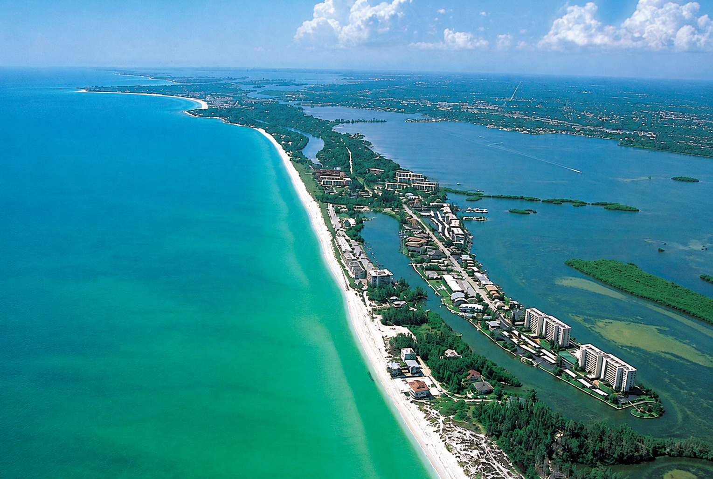
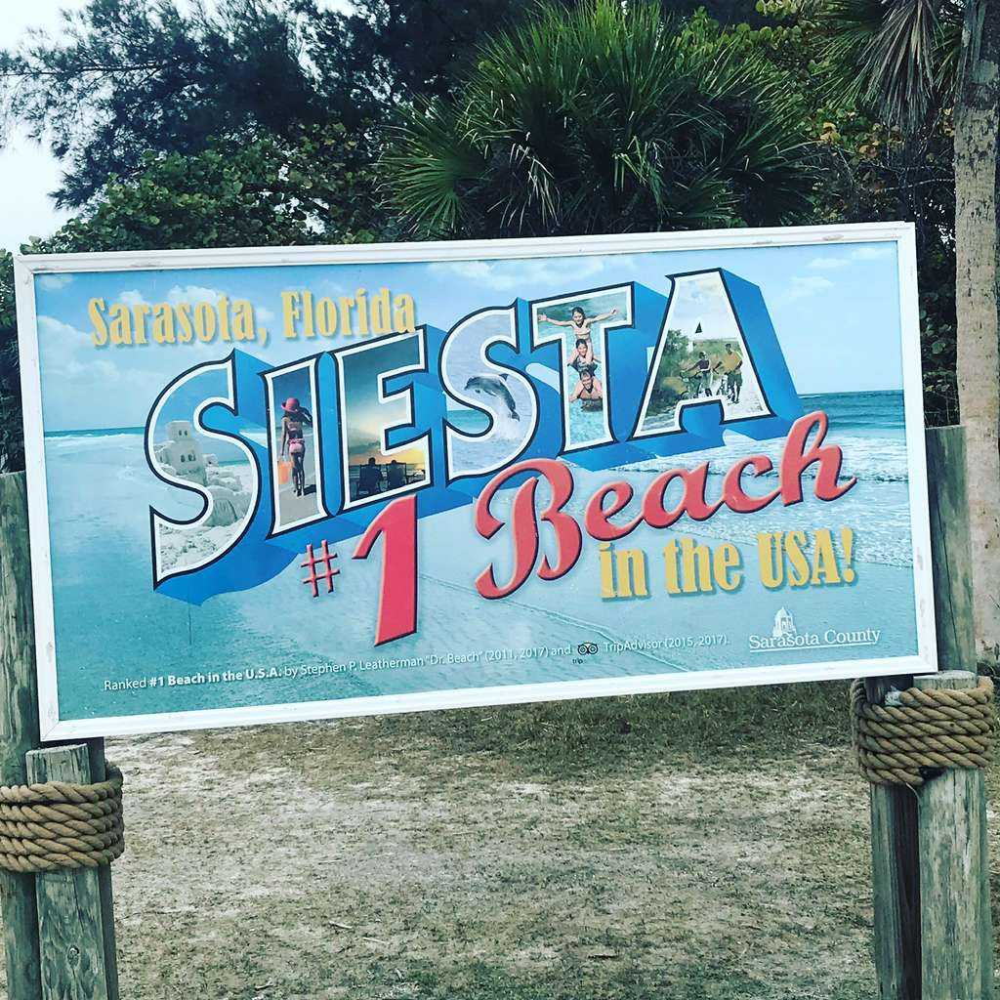
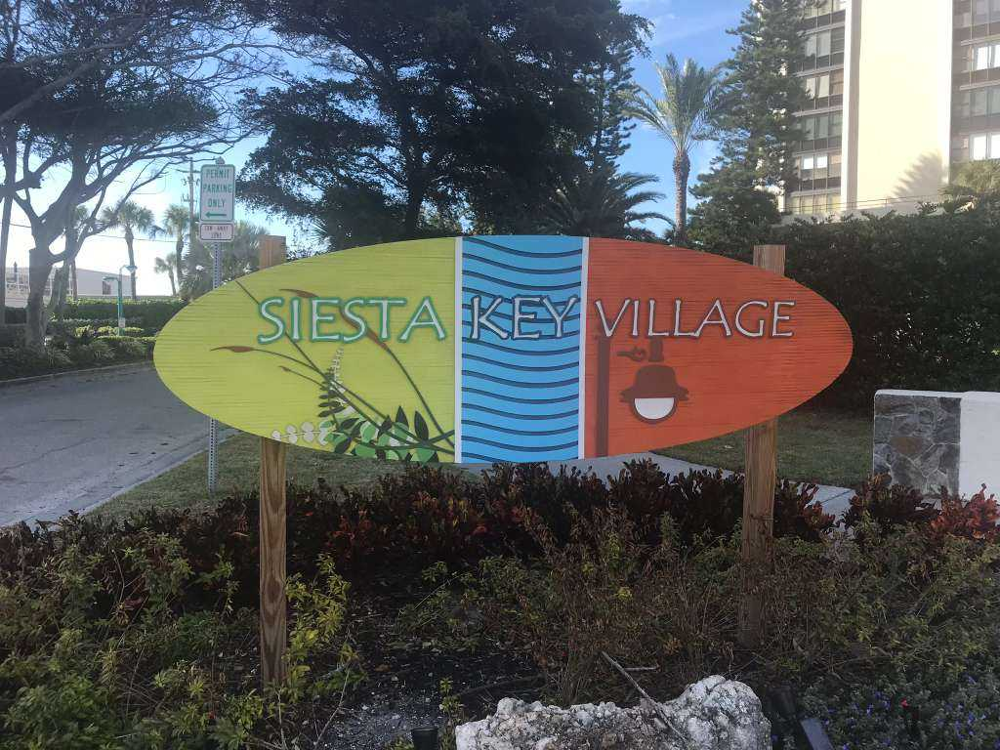
A little island personality
Posters.
Stories. Smiles.
Siesta Free Ride is equal parts transportation, local character and good-natured fun.

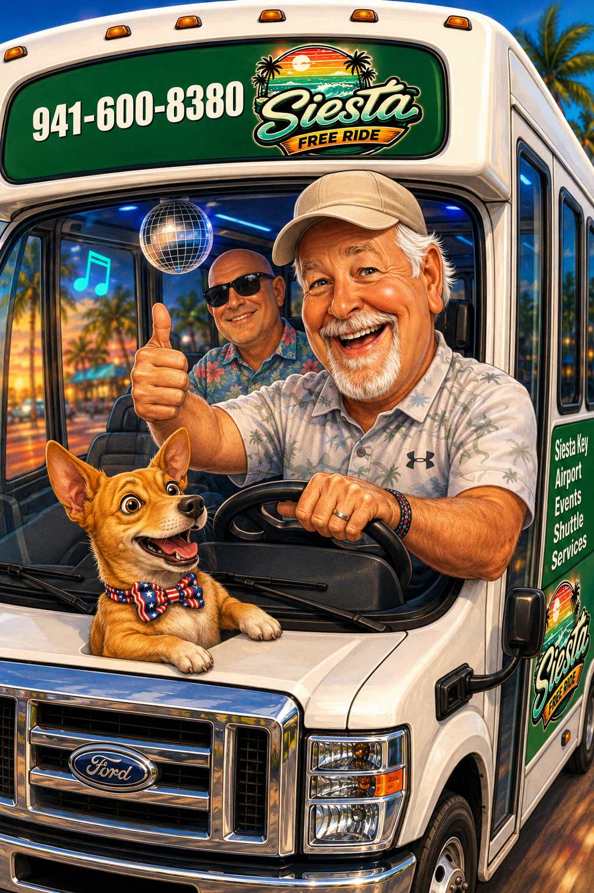
From the original gallery
The rides
you know.


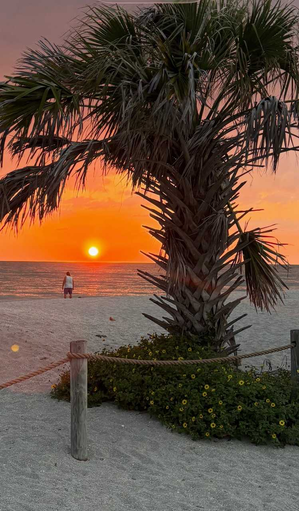


Need a ride?
See it in
person.
Call or text and we’ll get you moving around Siesta Key.